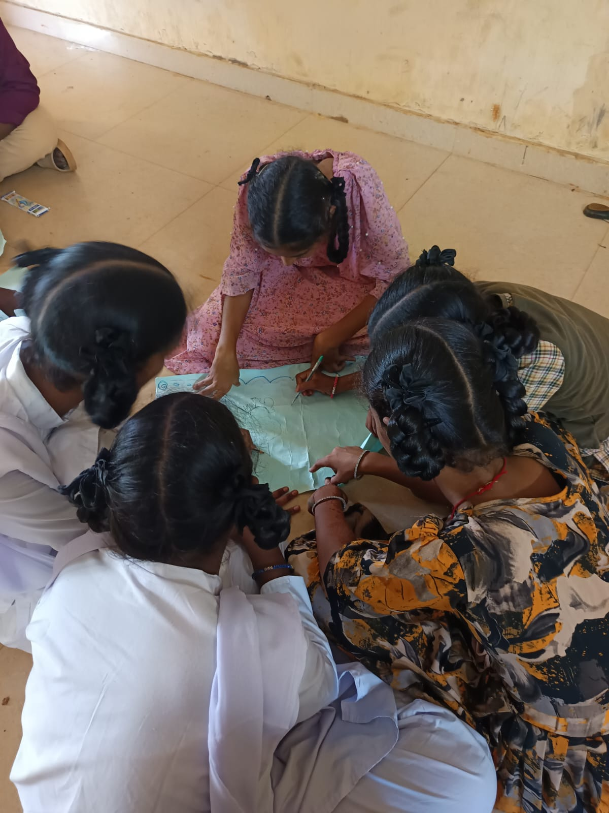
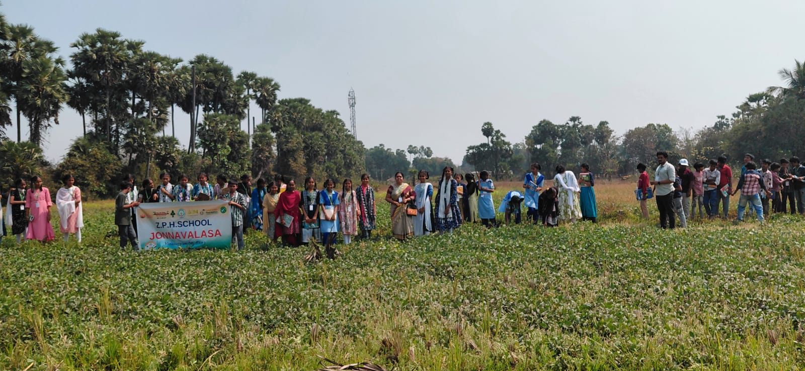
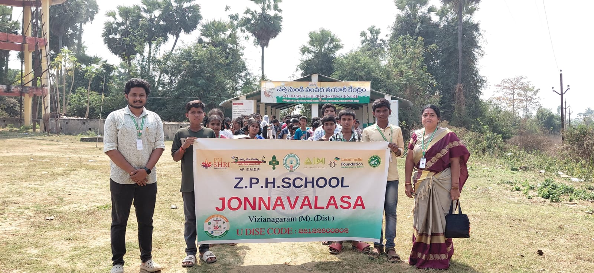
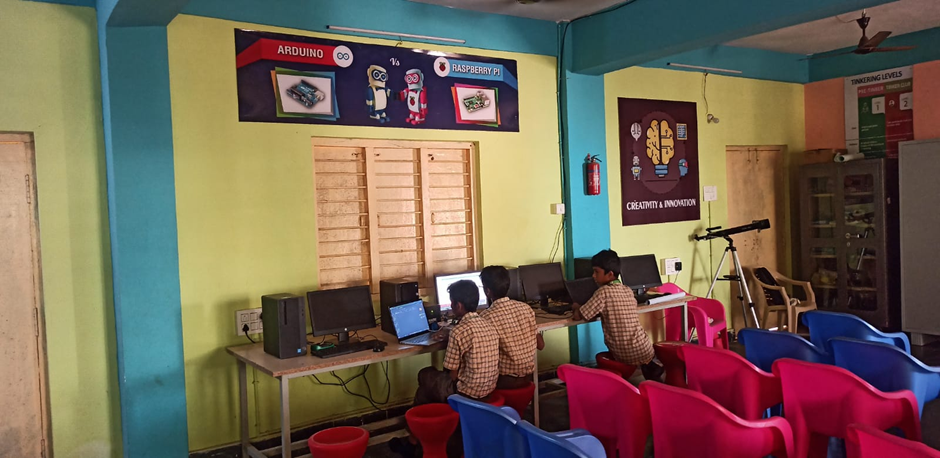
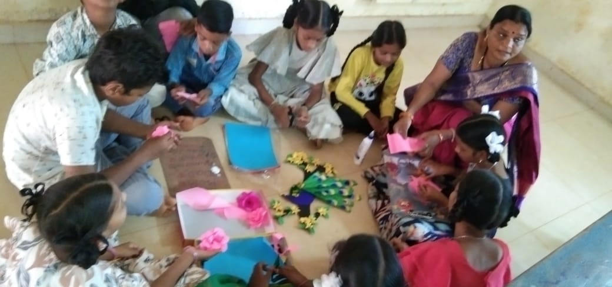

Academic & Environmental Innovations

No Bag Day
Designated days focusing on craft, science poster boards, assembly debates, and hands-on activities.

Agro Grow Bags
Promoting recycling by using empty rice bags to cultivate vegetables on campus.

Organic Farming
Students operate the school kitchen garden, managing soil testing, layout marking, and weeding.

ATL Lab
Atal Tinkering Lab where students explore innovation, design thinking, models and hands-on STEM activities.

Low Cost TLM
Teachers design Low-Cost No-Cost Teaching Learning Materials to explain complex concepts visually.

Vocational Education
Vocational exposure includes IT, ITC and BFSI learning along with internships at Grama Sachivalayam Jonnavalasa.